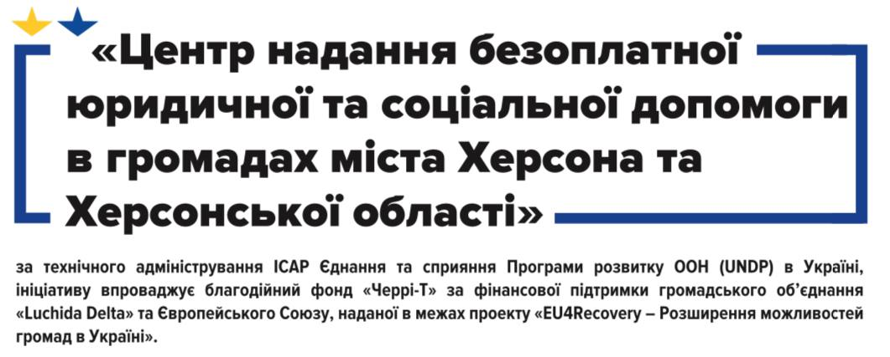

Ми об'єдналися, щоб Вам допомогти!
«Центр надання безоплатної юридичної та соціальної допомоги в громадах міста Херсона та Херсонської області»
Мешканцям міста Херсона та Херсонської області
- оскарження дій чи бездіяльності органів влади
- оформлення чи перерахунку соціальних виплат, пільг
- виправлення помилок у нарахуваннях за комунальні послуги
- розлучення, аліменти, спадщина
- допомога людям, що втратили документи на житло та потребують допомоги у їх відновленні
- постраждалим внаслідок війни
- потерпілим від катування або жорстокого поводження під час війни
- постраждалим від домашнього насильства
- компенсація за житло, якому завдано шкоди бойовими діями
- виїзд за кордон чоловіків під час дії воєнного стану
- як бути з кредитами під час воєнного стану

Ви можете отримати безплатну консультацію юриста та соціального працівника:
Підписуйтеся і будьте з нами у Facebook